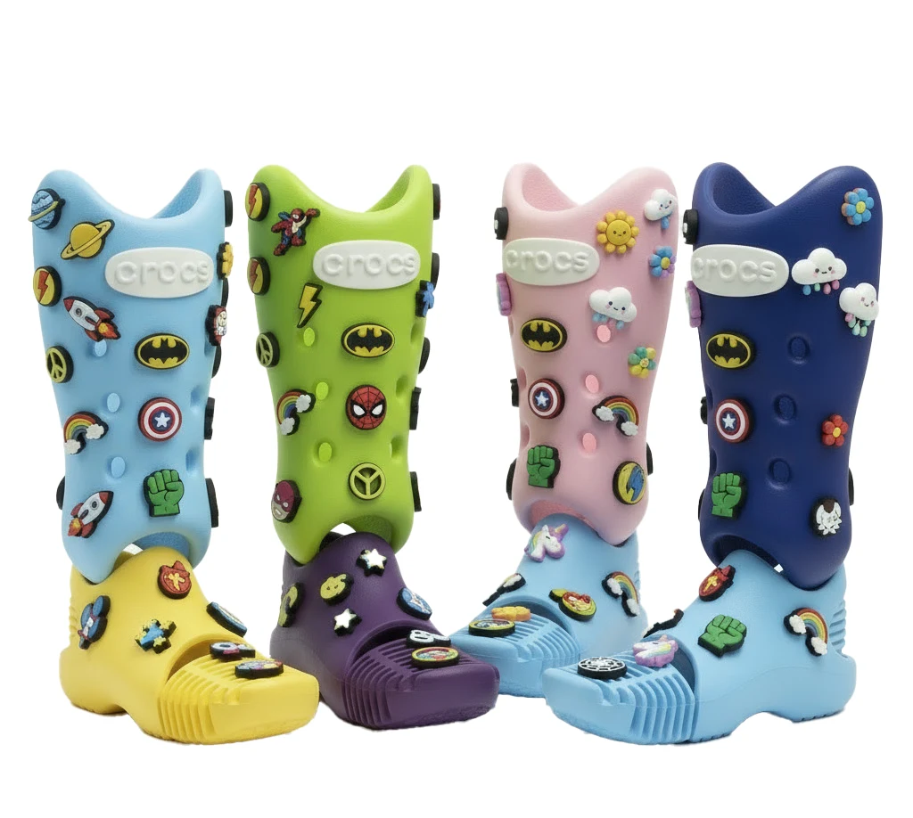
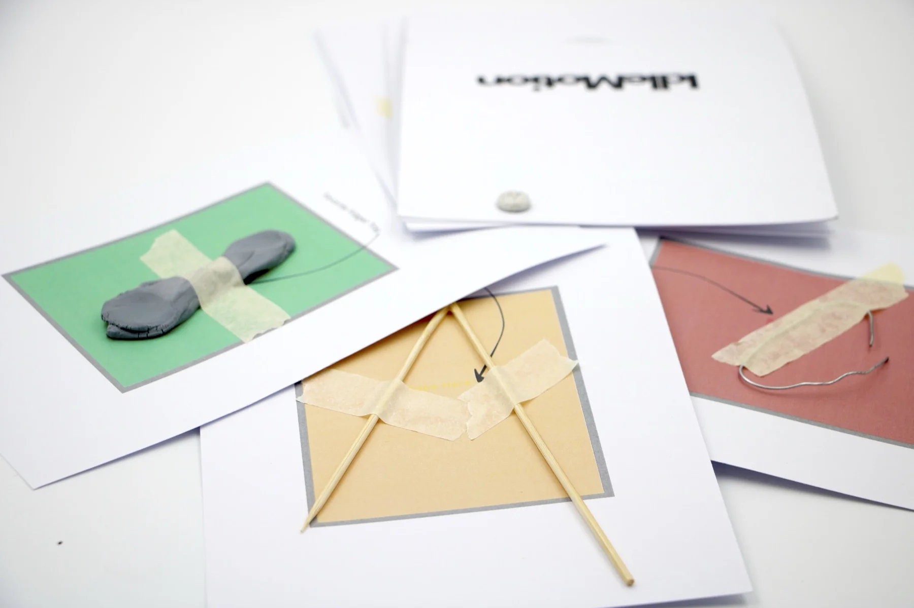
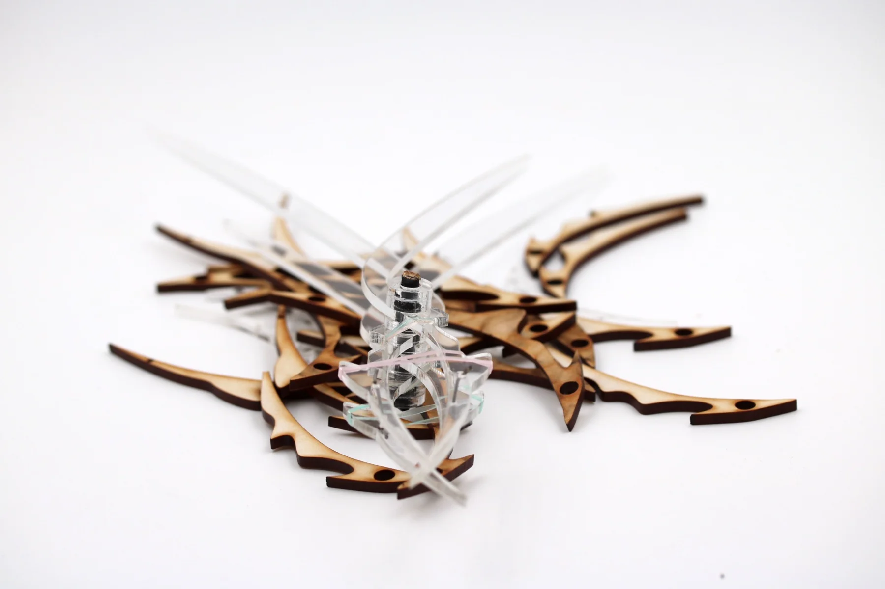
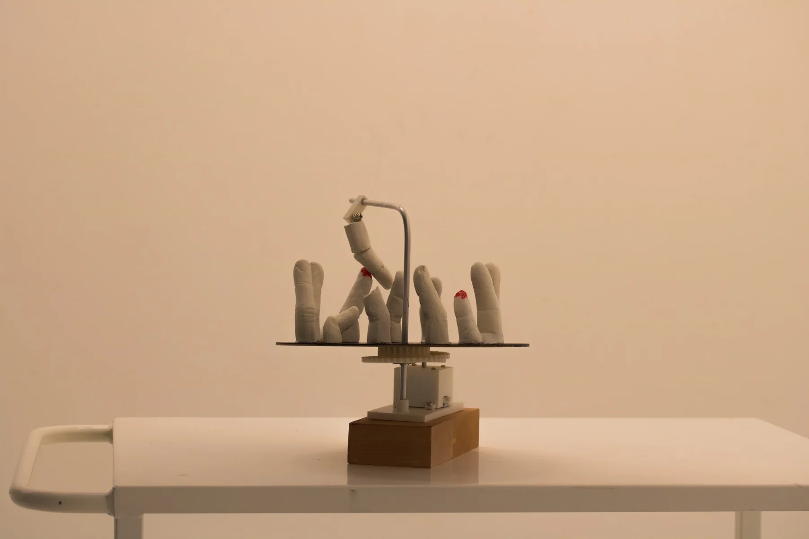
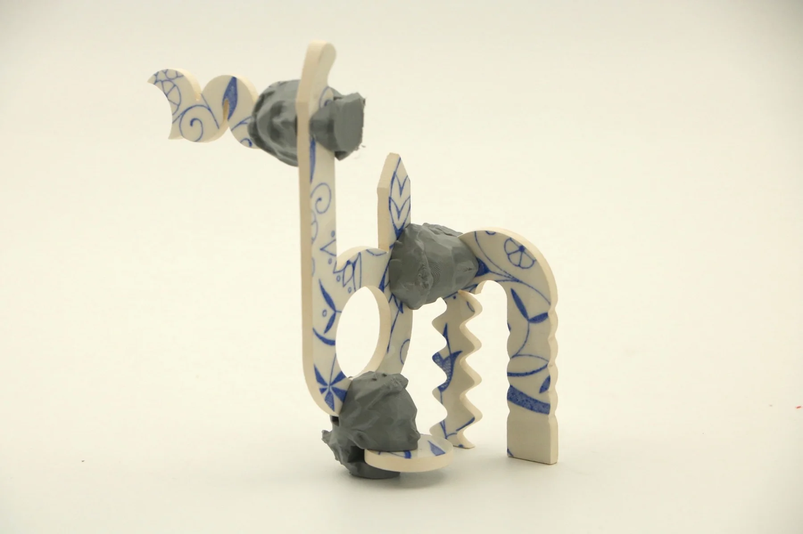

01 / Product design
Limb It Less
A prosthetic concept that puts children’s choices, colour and self-expression at the centre of the design.
Product concept · AI-assisted exploration
View projectProsthetics, mechanisms, objects and experiments. A selection of the things I made before my current robotics research.
Explore my current research
A prosthetic concept that puts children’s choices, colour and self-expression at the centre of the design.
Product concept · AI-assisted exploration
View project
Cultural probes, tactile habits and a kinetic sculpture.

An exploration of cable-actuated gripping mechanisms.

Studies in movement, material and light.

Modular structures assembled from repeated fragments.